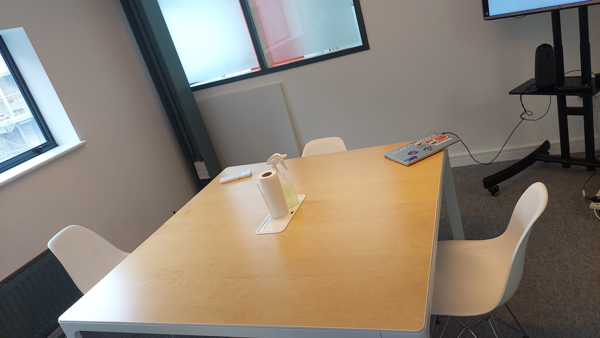
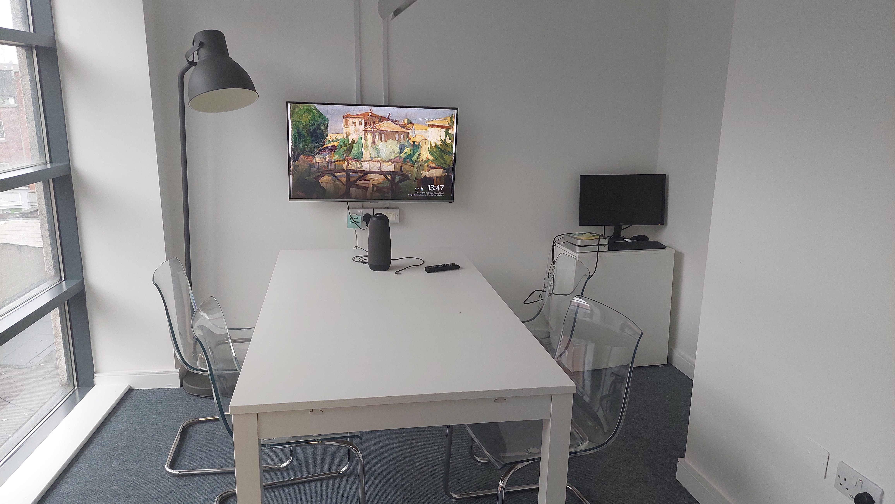

My Work Experience At Phorest
My Work Experience At Phorest
Day 1 of Work Experience
I started my first day of work at Phorest by meeting the group of people that I would be working with and shadowing two of them in a meeting. During this meeting I learnt more about how the inner workings of a tech company works in a post pandemic world due to the fact that remote working is now an integral part of most tech based companies. After the meeting was done I installed an application called Vscode and was taught the basics of HTML and CSS and was also given the task of compiling everything that I will learn in a portfolio website to present at the end of my work experience. Later in the day I was given an intro to the coding language SQL and then I had to go home.
Picture Of The Room Where I Shadowed A Meeting
Day 2 of Work Experience
My second day at Phorest started with me working on my website and then I was taught how to make and use a Github and Netlify account which is what I will be using to upload my website to a live server. After I worked on my website a bit more I then shadowed the consumer tribes day to day activities which I found very interesting as they were producing software that would later be in use at customer support. After lunch I was then taught how a QA testers job works and how they work together with software developers to help create a high quality product and I found it very insightful and very interesting.
Where I Made My Github Account And Learnt About Being A QA Tester
My Thoughts About Working For Phorest
Overall my experience at Phorest was very positive and was very insightful as I hope to pursue a career in tech in the future and my time at Phorest helped show me the inner workings of a tech company post pandemic.
My Workplace

Me And Everyone I Worked With